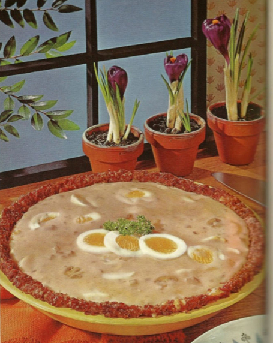

Home
Creamed Eggs in Corned Beef Crust

To be honest, I don't know what to make of this one. The ingredients sound reasonable but it just looks... questionable.
This facinating take on eggs and corned beef comes to us from the "Time to Entertain" section. Imagine the look
on your guests' faces when you reveal this masterpiece.
Creamed Eggs in Corned Beef Crust
Ingredients
- 1 can (12 ounces) corned beef
- 1 slice white bread, crumbled
- 1 egg, lightly beaten
- 6 hard-cooked eggs, sliced
- 1 can (10 3/4 ounces) mushroom soup
- 1/4 cup milk or cream
- 1 can (3 ounces) whole mushrooms
- 1 teaspoon Worcetershire sauce
Directions
- Flake corned beef with a fork. Add breadcrumbs and egg and mix well. Press mixture into bottom and on sides
of an 8-inch pie plate.
- Combine soup, milk or cream, mushrooms and Worcestershire sauce and heat over simmering water.
- 15 Minutes before serving, bake "pie crust" in a preheated 350 F oven for 15 minutes. Reserve a few egg slices for garnish and add remaining eggs to the hot mushrooms and sauce.
-
- Remove pie from oven, pour hot creamed eggs and mushrooms into it, and garnish with reserved egg slices and parsley. Serve immediately.
Source: https://static.boredpanda.com/blog/wp-content/uploads/2021/06/203-60b8a32d6d90d__700.jpg